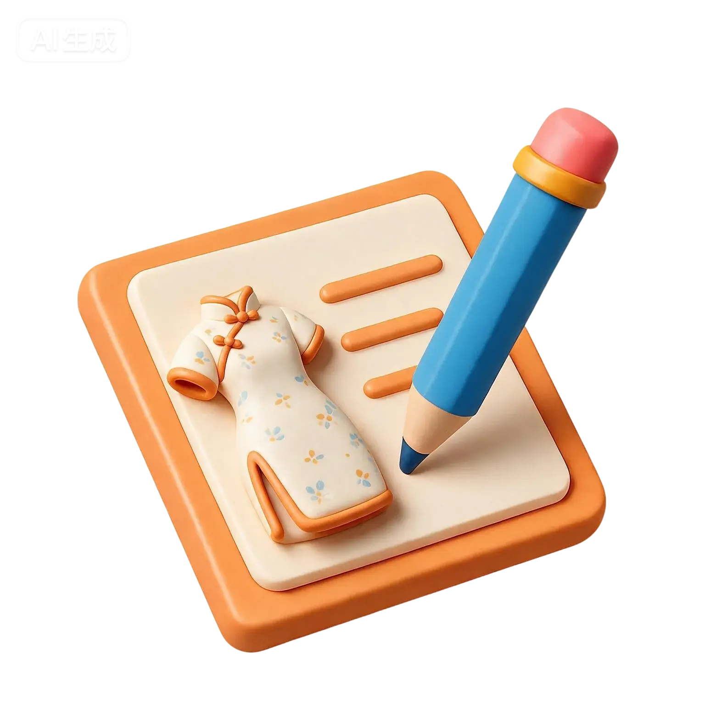

AI 史料助手基于本地 PDF、DOCX 与数据库标签检索；回答附带可回查的史料编号。
扫描版 PDF 若没有可复制文字，需先 OCR；索引过程不会改动原文件或网页数据。
时间至
议题
📎 上传论文草稿（可选）
仅在“生成论证框架”中使用。支持 DOCX、TXT、Markdown，最大 5MB；文件只在本次分析中读取，不会保存。
正在检索与分析，请稍候…

AI 史料助手基于本地 PDF、DOCX 与数据库标签检索；回答附带可回查的史料编号。